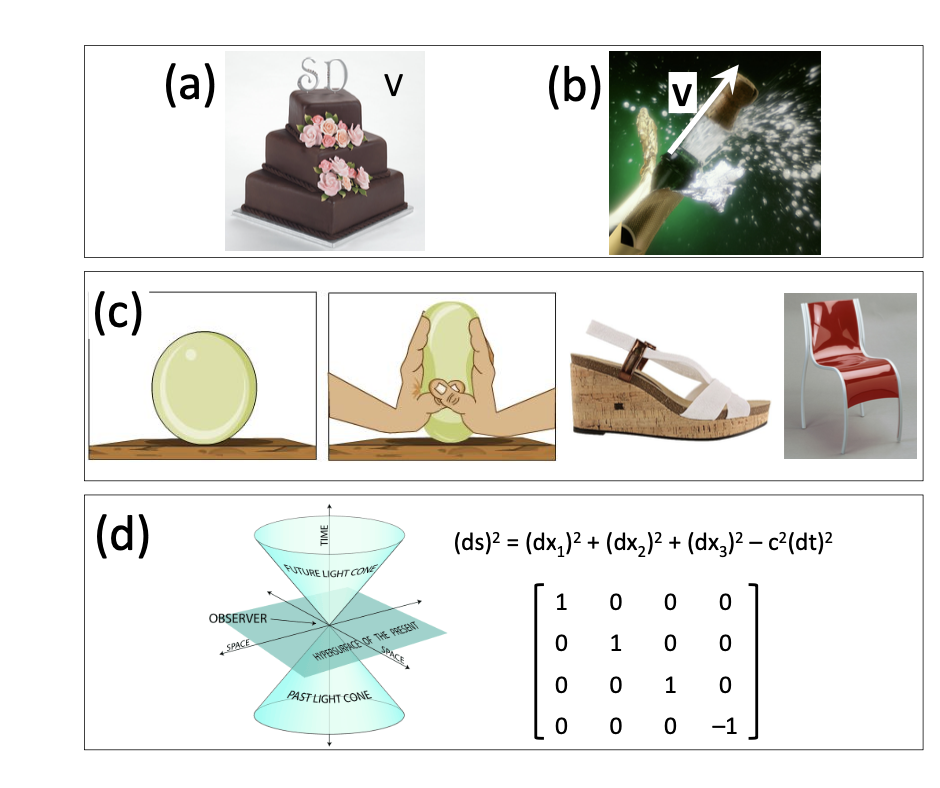
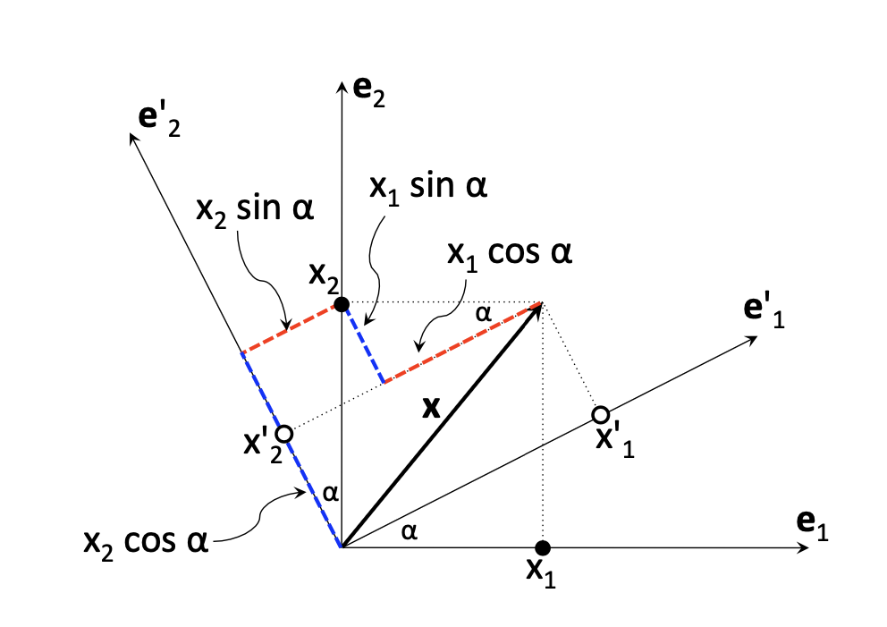
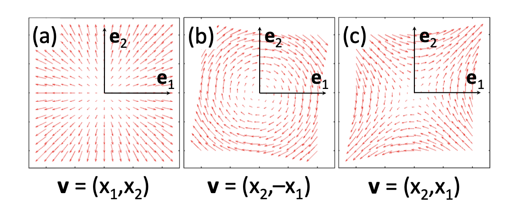
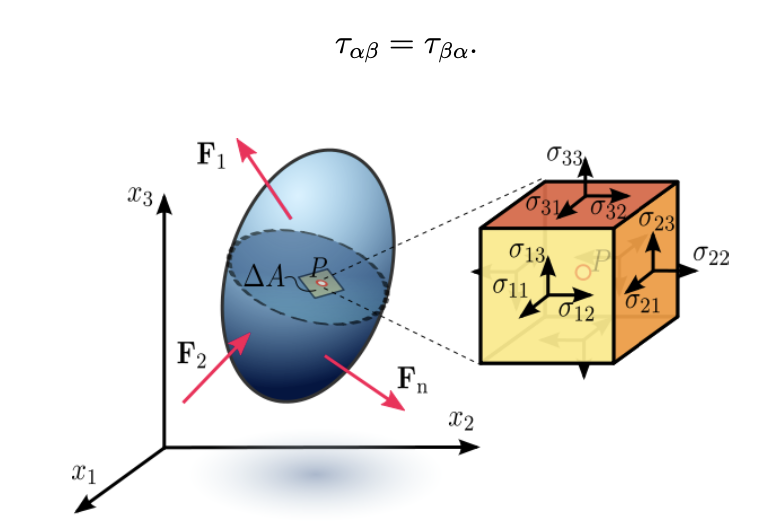
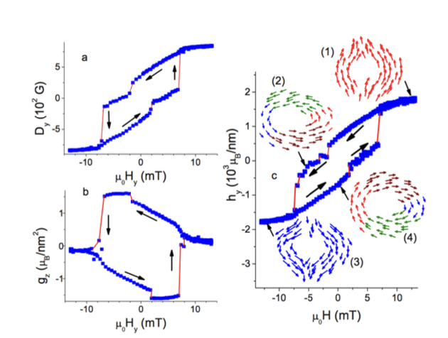
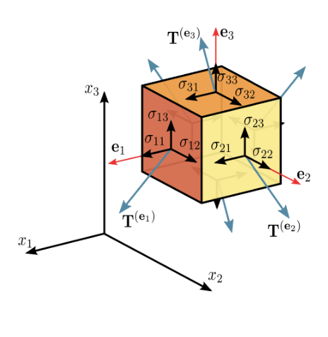

Cartesian Tensors#
Definitions#
Physical properties are described using one or several independent variables. For example, volume \( V \) of a cake (see figure below a) is described using only one variable. Such properties are called scalars. Three independent variables are needed to describe the velocity of the champagne cork (see figure below b). Such properties are called vectors. We can use \( v \) or \( (v_x, v_y, v_z) \) or \( x_1, x_2, x_3 \) to represent the vector of velocity.
How many independent variables are needed to describe the response of a solid to external stress? This property should reflect the direction and magnitude of the force applied to each point, and the direction and magnitude of the displacement of each point. Hence, nine independent variables are needed. Thus, in general, physical properties are described using \( N \) independent variables.
In this chapter, we will consider how representation of these properties changes upon transformation from one coordinate system to another. We will consider real variables only and focus on three-dimensional Euclidean space. Some of the definitions will be given for \( N \)-dimensional space.
 Examples of (a) scalar - volume of a cake; (b) vector v- elocity of a champaign cork; (c) relation between directions of forces and displacements of each point in a solid; (d) metric of Minkowski space.
N-dimensional space#
Consider a set of \( N \) real independent variables \( x_1, x_2, \dots, x_i, \dots, x_N \). These values will be called coordinates of a point. All the points corresponding to all the possible values of the coordinates form the N-dimensional space. This space will be denoted as \( V_N \).
Note the difference between a coordinate system defined by \( x_1, x_2, \dots, x_i, \dots, x_N \) and a point given by a specific realization of the coordinates \( x_1, x_2, \dots, x_i, \dots, x_N \).
Curves in N-dimensional space#
If there are \( N \) equations:
and \( u \) is a parameter and \( f_i(u) \) are functions of \( u \), the collection of points which satisfy these equations defines a curve in \( V_N \).
Subspace in N-dimensional space#
In general, if there are \( N \) equations
where \( u_1, u_2, \dots, u_M \) are parameters and \( f_i(u_1, \dots, u_M) \) are functions of these parameters, the collection of all points which satisfy these equations defines an \( M \)-dimensional subspace \( V_M \) in \( V_N \). If \( M = N - 1 \), the subspace \( V_M \) is called a hypersurface of \( V_N \).
Kronecker delta (\( \delta \)) symbol#
We can define the Kronecker delta symbol through:
In matrix language, this is nothing more than the identity matrix!
Summation convention#
In order to simplify equations, we will use two conventions regarding the indices.
Indices will take all values from 1 to \( N \), unless otherwise stated explicitly.
If an index appears twice in any single term, a summation with respect to this index is implied. The summation goes over the range from 1 to \( N \) (convention 1).
For example, in 3D space (\( N = 3 \)):
Similarly, in \( N \)-dimensional space:
Note that no summation is implied in
The summation index is called a dummy index; it can be replaced by any other index as long as it does not conflict with other indices used in equations. For example, if \( \bar{x}_i \) is defined by the function \( \phi_i \) as
then the differential of \( \bar{x}_i \) can be written as
In order to avoid confusion, the same index should not be used more than twice in one term. For example,
and
To demonstrate the effect of the Kronecker symbol:
Exercise: Show that
Change of Basis#
Transformation of coordinates in 3-dimensional space#
Let us introduce a set of independent basis vectors in a 3D space: \( \mathbf{e}_1, \mathbf{e}_2, \mathbf{e}_3 \). Then, any vector \( x \) can be represented as
where \( x_1, x_2, x_3 \) are called components of the vector \( x \). Consider a new basis set \( e'_1, e'_2, e'_3 \) related to the old one by:
or
where \( S_{ij} \) are elements of a matrix \( S \). In the new basis set, vector \( \mathbf{x} \) can be written as:
Substituting the expressions for \( e'_1, e'_2, e'_3 \) into this equation gives:
Substitution of the expressions for \( \mathbf{e}_{1}, \mathbf{e}_{2}, \mathbf{e}_{3} \) into this equation gives:
Hence, the components of the vector \( x \) in the old and new basis sets are related as
Or
i.e. \(x_i\) are functions of \(x'_i\) and components of the transformation matrix \( S \) are given by:
The system of equations \(x_i = S_{ij} x_{0j}\) can be resolved with respect to \( x'_{I} \) if \( \det(S) \neq 0 \). In this case, it is possible to define the inverse of the matrix \( S \), which transforms components of \( \mathbf{x} \) from the old basis to the new one:
Rotation#
If the transformation defined by the matrix \( S \) is a rotation, i.e., \( S \) is orthogonal (\( S^{-1} = S^T \)), then
Transformation of coordinates in N-dimensional space#
Consider a space \( V_N \) and a coordinate system \( x_1, x_2, \dots, x_N \). If there are \( N \) equations
where \( \phi_i \) are independent single-valued continuous and differentiable functions of coordinates, these equations define the transformation of coordinate system \( x_1, x_2, \dots, x_N \) into a new coordinate system \( x'_1, x'_2, \dots, x'_N \).
A necessary and sufficient condition for the independence of the functions \( \phi_i \) is that the determinant of the \( N \times N \) matrix formed by the derivatives
denoted as \( S \), is not equal to zero:
Under this condition, the above equations can be solved with respect to \( x_i \), i.e., one can find functions \( \psi_i \) which express old coordinates \( x_i \) in terms of new coordinates \( x'_j \):
Rotations of Cartesian coordinate systems#
Lets investigate how components of a vector are changed by a rotation of the Cartesian coordinate system. For convenience, introduce transformation matrix \( L = S^{-1} \), where matrix \( S \) defines the rotation of the basis set vectors. Then,
Orthogonality of \( L \) means that
(In the following we always assume that matrix \( L \) is orthogonal.)
Since we defined new basis \( e'_j \) (\( j = 1, 2, 3 \)) as
For orthonormal vectors \( \mathbf{e}_k \) (\( k = 1, 2, 3 \)) and rotation \( L \):
i.e., elements of the transformation matrix \( L \) are defined by the scalar products of the old and new basis vectors.
Exercise: Show that the transformation matrix \( L \) for a rotation of the coordinate system by an angle \( \theta \) about the \( \mathbf{e}_3 \) axis is

Rotation of Cartesian axes by an angle \( \alpha \) about the \( x_3 \) axis. Note that the rotation of the axes changes components of the vector \( x \) but not the vector itself.
Exercise: Show that two consecutive rotations of the coordinate system by an angle \( \theta \) about the \( \mathbf{e}_3 \) axis is also a rotation with the value of the rotation angle of \( 2\theta \).
In general, the product of two rotations is also a rotation, i.e., if
and
then
Transformation of vectors#
Consider a set of quantities \( v_i \) (\( i = 1, \dots, N; N = 3 \)), which are functions of coordinates \( x_j \) (\( j = 1, \dots, N; N = 3 \)), i.e.,
and investigate how their values are changed by a rotation of the Cartesian axes. We already know that coordinates transform as
If a set of new quantities \( v'^{i} \) can be obtained from the set of \( v_i \) by the same transformation:
then \( v_i \) form the components of a vector or \(1^{st}\)-order Cartesian tensor. According to this definition:
i.e.,
Review:
N-dimensional space: variables \( x_1, x_2, \dots, x_N \) (\( x_i \in \mathbb{R} \)).
The summation convention: \( a_i b_i = a_i b_i \).
Basis set \( \mathbf{e}_i \), rotation of the coordinate system: \( e'_j = S_{ij} \mathbf{e}_i \) and the corresponding transformation of coordinates \( x'_i = (S^{-1})_{ij} x_j \).
1st-order Cartesian tensors \( v = (v_1, v_2, v_3) \): \( v'_i = (S^{-1})_{ij} v_j = L_{ij} v_j \).
Exercise: Clearly (by definition), \( v \) is a vector if
i.e., \( v = (x_1, x_2, x_3) \). Consider other sets of \( v_i \) in 2D space. Which of these functions are scalars, vectors, or neither?
 Examples of functions in the 2D case: (a) \(v(x_1, x_2) = x_1 \mathbf{e}_1 + x_2 \mathbf{e}_2\); (b) \(v(x_1, x_2) = x_2 \mathbf{e}_1 - x_1 \mathbf{e}_2\);(c) \(v(x_1, x_2) = x_2 \mathbf{e}_1 + x_1 \mathbf{e}_2\)
Exercise: For the case of a two-dimensional space, show that \( \mathbf{v} = (x_2, -x_1) \) transforms as a vector under rotation of the coordinate system and \( \mathbf{v} = (x_2, x_1) \) does not.
Transformation of scalars#
Scalars or \(0^{th}\) order tensors have only one component, which is invariant with respect to the rotation of the coordinate system.
Are \( x_1^2 + x_2^2 \) and \( x_1^2 + x_2^2 + x_3^2 \) scalars in the three-dimensional Cartesian space?
Examples of scalars include \( \mathbf{F} \cdot d\mathbf{r}, e\mathbf{E} \cdot d\mathbf{r}, \mathbf{B} \cdot \mathbf{B} \), and many others.
Exercise: Show that the scalar product of vectors \( \mathbf{a} \) and \( \mathbf{b} \) is, indeed, a scalar, then demonstrate it for \( \nabla \cdot \mathbf{v} \), where \( \mathbf{v} \) is a vector.
Example: Let \( \phi(x_1, x_2, x_3) \) be a scalar and derive \( \mathbf{E} \) as:
Is \(\mathbf{E}\) a vector? Components \(E'_i\) in a new basis are given by
i.e., they satisfy the transformation condition for the \(1^{st}\) order tensors. Thus, \( \mathbf{E} \) is a vector.
\(2^{nd}\) and Higher-Order Tensors#
Many physical properties of materials are described using the language of tensors. For example, deformation, dielectric and magnetic permittivities, magnetoelectric effect, and conductivity are described using \(2^{nd}\) order tensors.
Example: Spin Hamiltonian used to model electron paramagnetic resonance (EPR) spectra for a system of \( N_{\text{atm}} \) atoms with nuclear spins \( I_k \):
Where \(\mathbf{g}\) and \(\mathbf{A}\) are \(2^{nd}\) order tensors. \(\mathbf{A}_k\) is the hyperfine interaction tensor for atom \(k\); it is decomposed into isotropic and anisotropic parts:
These properties are related to the atomistic structure of materials, e.g., the conductivity tensor of crystals with cubic symmetry is isotropic. In this section, we describe basic operations with tensors.
Quantities \( T_{ij} \) are components of a 2nd-order tensor if they transform according to
upon rotation of the coordinate system. Then, components of the tensor \( T_{ij} \) in the old basis are expressed via components \( T_{k'l} \) in the new basis as
In general, components of an order \( N \) tensor should transform as
And
An \(N\)-th order Cartesian tensor has \( 3^N \) components. Components of 2nd-order tensors are conveniently represented using matrices with elements \( T_{ij} \), where \( i \) refers to the row number and \( j \) refers to the column number.
Outer Product#
The outer product of vectors \( \mathbf{a} \) and \( \mathbf{b} \) is defined as:
and is denoted as:
Note the difference from \( \mathbf{A} = \mathbf{a} \times \mathbf{b} \)!
Consider transformation of the outer product components upon rotation of the coordinate system:
Thus, components of the outer products of two vectors transform in the same way as components of a 2nd-order tensor.
Since \( \mathbf{a} = a_i \mathbf{e}_i \) and \( \mathbf{b} = b_j \mathbf{e}_j \), the tensor formed by the outer product of \( \mathbf{a} \) and \( \mathbf{b} \) can be written as:
Note that while components of the tensor \( T \) depend on the coordinate system, it is the same tensor in both coordinate systems.
The outer product operation can be applied to arbitrary tensors \( \mathbf{A} \) and \( \mathbf{B} \) of orders \( N \) and \( M \), respectively; the resulting tensor has order \( N + M \):
Components of the outer product tensor are
Contraction#
Contraction of a tensor assumes:
Equating two subscripts
Summing over all possible values of these subscripts.
In the case of the 2nd-order tensor, contraction of \( \mathbf{T}1 \) gives the sum of its diagonal elements:
which gives a zero-order tensor.
In general, contraction of a tensor of order \( N \):
Produces another tensor, and
Reduces its order to \( N - 2 \).
To show this, we need to investigate the transformation of the entity formed by contraction. (In anticipation that it is a tensor, we call it \( T \)).
For an order \( N \) tensor:
For the contracted tensor (using the orthogonality of \( L \)):
The contraction operation is not defined for vectors. However, one can first generate a 2nd-order tensor as the outer product of two vectors
and then apply the contraction operation, which gives a scalar product of the vectors
Inner Product#
Operations of multiplication and contraction can be combined to produce new tensors. For example, if \( \mathbf{A} \) is a 3rd-order tensor and \( \mathbf{B} \) is a 4th-order tensor, then new tensors \( C_{ijmnt} \), \( C_{kln} \), and \( C_m \) of 5th, 3rd, and 1st order can be constructed as follows:
This process is called inner multiplication and the resulting tensors are called inner products. To prove that inner products are tensors, consider transformations of their components. For example:
in a rotated coordinate system:
Thus, \( \mathbf{C} \) is a tensor.
Gradient of a Vector#
If \( \mathbf{v} \) is a vector, then quantities
form components of a 2nd-order tensor. To prove it, consider these quantities in a rotated coordinate system:
Tensor \( \mathbf{T} = \nabla \mathbf{v} \) can be considered as the gradient of a vector.
Exercise: Demonstrate that matrix \( T \) represents a 2nd-order tensor:
Summation of Tensors#
If \( A_{i_1i_2 \dots i_N} \) and \( B_{j_1j_2 \dots j_N} \) are components of two tensors of the same order in the same coordinate system, then their sum and difference are defined as:
To prove that \( S_{k_1k_2 \dots k_N} \) are components of a tensor, show that they transform as:
upon rotation of the coordinate system.
Symmetric Tensors#
A 2nd-order tensor is called symmetric if its components are related as:
for all values of \( i \) and \( j \). In the case of an \( N \)-th order tensor, if:
this tensor is said to be symmetric with respect to the \( n \)-th and \( m \)-th subscripts.
Examples include Stress and strain tensors.
Stress Tensor – Force \( \mathbf{F} \) acting on a small surface element \( \mathbf{S} \):#
Where:
 Stress in a loaded deformable body.
Maxwell Stress Tensor:#
Antisymmetric Tensors:#
If:
Then the tensor is said to be antisymmetric.
Examples include that Levi-Civita Tensor and Electromagnetic (or Faraday) Tensor.
Electromagnetic Tensor:#
Where:
Decomposing a Tensor into Symmetric and Antisymmetric Parts#
An arbitrary tensor can be written as a sum of a symmetric and antisymmetric tensors.
For 2nd order tensors:
Where \( S_{ij} \) is symmetric and \( A_{ij} \) is antisymmetric.
For Nth order tensor:
The identity and permutation tensors#
Permutation Symbol and Permutation Tensor \( \epsilon_{ijk} \)#
The permutation symbol \( \epsilon_{ijk} \) is a three-index object defined as:
This is also called the Levi-Civita symbol, Levi-Civita density, alternating tensor, and signature. Notations \(\varepsilon_{ijk}\) and \(e_{ijk}\) are also used in literature.
In matrix and vector language the \(\epsilon\) tensor is used for the cross product \(\mathbf{C} = \mathbf{A} \times \mathbf{B} \Rightarrow C_k = \epsilon_{ijk}\,A_i\,B_j\)
The permutation symbol satisfies the following relations:
and, in general,
Proving that \( \delta_{ij} \) and \( \epsilon_{ijk} \) are tensors#
Even if neither \( \delta_{ij} \) nor \( \epsilon_{ijk} \) depend on coordinates, we can formally consider the transformation of their components with respect to the rotation of the coordinate system. Note that \( \delta_{ij} \) has two subscripts and \( \epsilon_{ijk} \) has three subscripts. Hence, in the new coordinate system:
Using the properties of \( \delta_{ij} \) and the orthogonality of the transformation matrix \( L \):
Similarly, transformation of \(\epsilon_{ijk}\) is given by:
First notice that \( \epsilon_{ijk} \) can be used to calculate determinants of \( 3 \times 3 \) matrices:
Hence, for the transformation matrix \( L \):
Using the orthogonality of \( L \) (\(\text{det}(L) = 1\)),
i.e., the properties of \( \epsilon_{ijk} \) do not change under orthogonal transformation, and the subscripts change as they should for the third-order tensor.
\(4^{th}\) Order \( \epsilon_{ijkl} \)#
The components of the rank 4 permutation tensor can be defined as:
Applications of \( \epsilon_{ijk} \):#
Example 1: Vector Product of \( a \) and \( b \):
Since
Setting \( i=1, j=2, k=3 \) gives (\( \epsilon_{123}=1 \)):
Since \( C_{1l} = e_l \), \( C_{2m} = a_m \), and \( C_{3n} = b_n \), we obtain:
The \(l\)-th component of \(\mathbf{c}\) is given by:
Example 2: Double Vector Product:
In the case of a double vector product
the \( i \)-th component of \( \mathbf{d} \) is
and the \( k \)-th component of \( b \times c \) is
Thus, we have
Using the identity
we find that
In vector form, this is expressed as
Example: Double cross products are used in solving geometrical problems. It is also used as an order parameter in complex dipolar structures in mag- nets and ferroelectrics 
Predicted hysteresis loops in asymmetric ferromagnetic ring. [S. Prosandeev and L. Bellaiche, Phys. Rev. B, 77 060101(R) (2008).]
Exercise: Find an explicit expression for the \( i \)-th component of
using the properties of the tensor \( \epsilon_{ijk} \).
Isotropic Tensors#
An isotropic tensor has components that remain the same in all rotated coordinate systems.
All rank-0 tensors (scalars) are isotropic, but no rank-1 tensors (vectors) are isotropic. Both \( \delta_{ij} \) and \( \epsilon_{ijk} \) are isotropic tensors. They are the unique isotropic tensors of the 2nd and 3rd orders, respectively.
The Quotient Theorem#
The quotient theorem states that if
in all coordinate systems rotated with respect to each other, and \( B \) is an arbitrary order \( M \) tensor, and \( C \) is an order \( N + M - 2 \) tensor, then quantities
are components of a tensor of the order \( N \).
We will prove the Quotient Law for \( N = M = 2 \). Assume that:
holds for all rotated coordinate systems and for any second-order tensor \( B \). Consider the transformation in a new coordinate system:
Comparing the left and right sides:
and note that subscripts \( k \) and \( v \) are dummy subscripts. Hence, the above equality can be rewritten as:
Since we assumed that \( \mathbf{B} \) is arbitrary, we conclude that:
Thus, the components \( A_{pr} \) transform as components of a tensor:
Exercise: Show that if
holds for any vector \( \mathbf{B} \) and for a vector \( \mathbf{C} \), then \( \mathbf{A} \) is a second-order tensor.
Physical Applications of Tensors#
Tensor of Inertia#
Consider a collection of interconnected points \( \alpha \) with masses \( m_\alpha \) (neglecting the masses of the connectors). The orbital momentum of this system is defined as:
For continuous bodies, substitute the summation over \( \alpha \) with integration over \( \mathrm{d}m \). Find the explicit expression for the \( i \)-th component of \( \mathbf{L} \):
where the components \( I_{ij} \) are called the components of the tensor of inertia. Since \( \mathbf{L} \) and \( \boldsymbol{\omega} \) are vectors, \( I_{ij} \) are components of a true second-order tensor.
We see that by construction, \( I_{ij} \) is a symmetric tensor.
Kinetic Energy of a Rotating System#
For a fixed rotation axis, the kinetic energy is given by:
In a general case:
Strain Tensor#
In the case of deformation, consider a small element of an elastic body subjected to deformation (see our earlier figure for stress tensor). Let us define deformation-induced dis- placement of a point as:
Here \(\mathbf{r} = (x_1,\, x_2,\, x_3)\) are coordinates of a point before deformation, \(\mathbf{r}' = (x'_1,\, x'_2,\, x'_3)\) are coordinates of the same point after the deformation and \(\mathbf{u}\) is deformation vector. Note that coordinates \(x'_i\) are functions of the coordinates \(x_k\).
Let the distance between two points before and after deformation be given by:
The relationship between the two can be expressed as:
Since components of the deformation vector \(u_i\) are functions of \(x_k\), we have
Thus,
which can also be written as
or
where \(u_{ik}\) is the deformation or strain tensor:
Stress Tensor#
Stress is defined as the average force per unit area of a surface within a deformable body:

Components of the stress tensor
Consider a small volume shown in the above figure. The \(i^{th}\) component of the total force acting on a volume \( V \) is given by:
where \(\mathrm{F}_i\) is the \(i^{th}\) component of the force \(\mathrm{F}\) acting on a unit of volume \(\mathrm{d}V\).
This volume integral can be converted to a surface integral if \( F_i \) has a form of \( \frac{\partial \sigma_{ik}}{\partial x_k} \). In addition, \( \sigma \) has to be a tensor: if \( \sigma_{ik} \) are components of a tensor, then \( \frac{\partial \sigma_{ik}}{\partial x_k} \) are components of a vector. Then,
and \( \sigma_{ik} \) has the dimension of strain. Here we used the divergence theorem:
where the surface \( S \) encloses the volume \( V \).
The moment acting on a “small” volume \( \mathrm{d}V \) is
Thus, the total moment acting on a body is
which can be re-written as
Rewriting the first term as a surface integral and use \( \frac{\partial x_k}{\partial x_m} = \delta_{km} \) and \( \frac{\partial x_i}{\partial x_m} = \delta_{im} \) in the second term:
For a body in equilibrium, the momentum should not contain the contribution due to the integral over the volume. You may wish to think about why this is!
The integral over volume in this equation vanishes if:
i.e., the stress tensor is symmetric.
For a homogeneously compressed body, pressure \(p\) is applied to every point of its surface and the force applied to a surface element \(\mathrm{d}\mathbf{S}\) is \(\mathbf{F} = -p\mathrm{d}\mathbf{S}\), i.e., components of the force are \(F_i = -p\mathrm{d}S_i\).
At the same time, components of the force are equal to
Thus, the stress tensor in this case is:
Elastic Constants#
The stress and strain tensors are related by:
The 4th-order tensor \( c_{ijkl} \) is called the stiffness tensor or elastic tensor, and its components are the elastic constants. The stiffness tensor has 81 components (\(3 \times 3 \times 3 \times 3\)), but only 21 independent components are needed due to symmetry considerations.